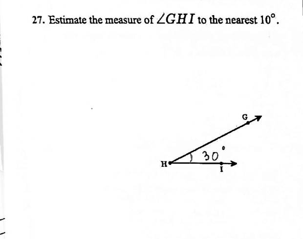
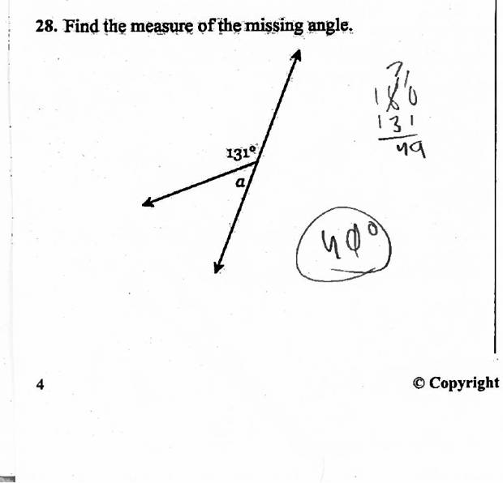
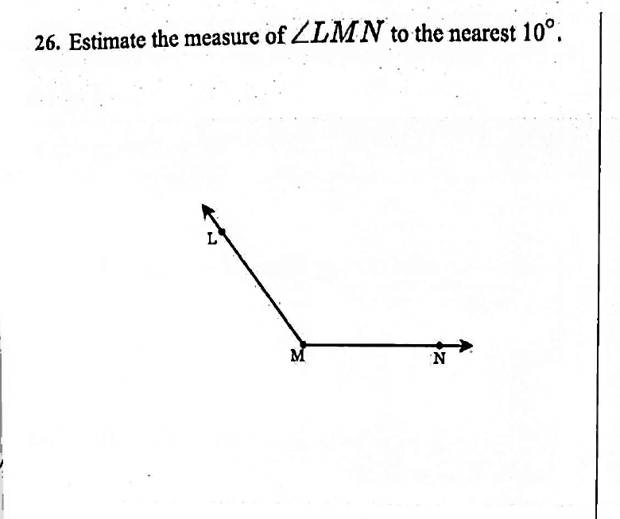
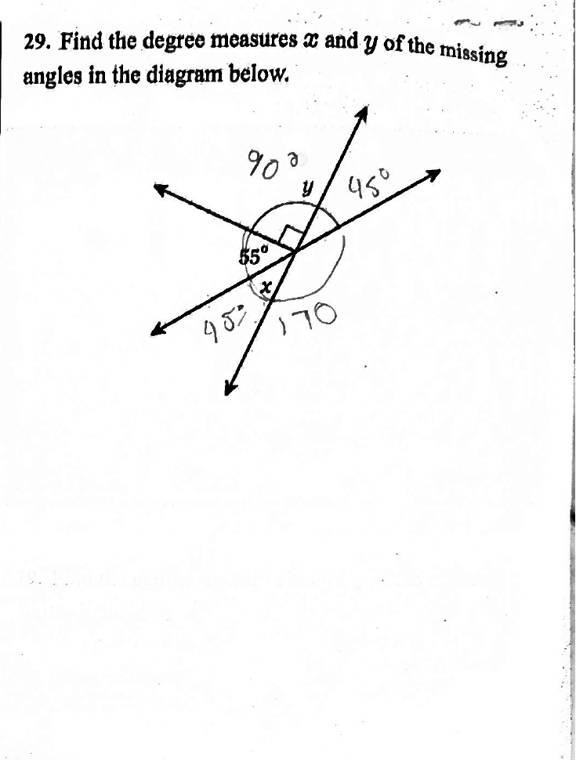

Pilot 3 · Individualised maths, MYP · Bishkek International School
Grade 8 diagnostic: what 18 paper tests told us
How we turned scanned paper tests into a skill-by-skill picture of the class, what it shows, and what it can't show yet.
17 September 2026 · Status: AI-checked The teacher check hasn't happened yet.
Use ← → or swipe to move · N shows speaker notes · T switches the theme
The question
Which gaps does each student bring into Grade 8?
What we wanted
A picture, per student and per skill, of what they can already do, so teaching can start from where each student is.
What this is not
It isn't a grade and it isn't a judgement of any student. Nothing goes back to students, and nothing here is summative.
Scope: fill in the skill graph and write an overview. Whether students are ready for a particular unit was out of scope.
What we had
Paper, a test, and a key with mistakes in it
- 3 papers were unnamed spare copies with no answers, so 15 students were marked.
- The key prints
falsefor Q3c and Q4c (a DeltaMath bug), so the correct answers were written in by hand. - Q26–27 ask for the nearest 10°, but the key gives 126° and 27°.
- Only one paper carries a class mark (8B). For the other students we don't know the class.
How it was processed
Six steps, from scan to report
- 1
Read
AI transcribes every answer blank and records how confident it is.
AI - 2
Check the reader
A second AI reading of 2 papers is compared with a careful gold reading.
AI · Ivan - 3
Mark by rule
A script marks against the key. An answer counts as settled only if the reading is confident, the rule is mechanical, and the readers agree.
Script - 4
Uncertain → teacher
Every answer that fails that test goes into a check file for a person to decide.
People - 5
Skill graph
Settled answers become a level per student and skill, each labelled with who checked it.
Script - 6
Reports
An overview and a plain-language teacher report. Teachers decide what to do with them.
AI drafts · people decide
AI does: reading the handwriting, proposing a status for unclear answers, describing what the student did, and drafting the reports.
People do: set the marking rules, rule on the key's errors, decide every uncertain answer, and confirm the error tags. Step 4 is still to come, at the teacher meeting.
Real scans, anonymised
Four answers and what happened to each

Read as 30°, with high confidence. The key's rule accepts 30 (or 22–32). Status: correct.

Read as 40° (circled). The AI's note: “Computed 180−131=49 correctly in the working but circled 40° as the final answer.” Status: wrong.

Nothing written. Status: no response. For the skill this counts as not demonstrated, not as wrong.

The AI saw “45°” and “170” near the diagram but couldn't tell which one was x and which was y. Low confidence, so the answer went to the teacher check.
These crops come from page 4, which has no name field. Students are shown by code only.
Two rules we now use for every assessment
Say what we don't know, and who checked what we do know
1 · Not tested ≠ not demonstrated
| blank | Not tested: no question on this skill was asked. |
| ND | Not demonstrated: the student was asked but left every answer blank. There's no evidence either way. ND is never turned into 0 automatically. |
| ? | Inconclusive: answers exist, but none of them could be judged. |
| 0–2 | A level, based on settled answers only. |
2 · Every result is labelled
AI-checked The AI read it and a script marked it. No person has looked at it.
Teacher-checked A person decided it.
AI + teacher The result rests on both kinds of answer.
Right now 100% of the filled cells are AI-checked.
Data quality
How far can we trust the reading and the marking?
Why the 60 are waiting
Low reading confidence 36 · crossed out with no final answer 7 · seen but not transcribed 5 · right value in the wrong form 4 · illegible digits 4 · x and y can't be told apart 2 · price pair to be ruled 2
Key problems settled by rule
Q3c, Q4c: the key prints “false”, so the correct fractions were written in. Q26, Q27: accept the nearest 10° or the exact value ±5° (Alisher to confirm). Q11, Q12: open questions split into pairs. A pair with no shared quantity or price is marked wrong (teachers to confirm).
Class picture · all cells AI-checked
14 skills × 15 students
Grade 8 skills on the left, then G7, then G6. 210 cells: 77 at level 2, 40 at 1, 23 at 0, 63 ND, 7 “?”. 32 of the 140 levelled cells rest on a single answer. The D15 row is entirely ND: that paper may be a fourth spare copy.
What stood out
Strong on plotting, weak on angle estimation and percentages
Strongest
ALG-13 plotting points: 12 of 15 at level 2.
ALG-28 equations with fractions: 11 at level 2.
Every student with a level reached 1 or 2 on NUM7-07 ratio notation and ALG7-04 substitution.
Weakest
GEO6-02 angle estimation: 5 at level 0, only 1 at level 2.
NUM-6 percentage change: 4 at level 0, and 9 of 15 left both questions blank.
Probably not taught yet
The percentages block (Q15–18) is 48% blank. On Q17–18, 8 of 15 students (53%) left each one blank. Read this as “not reached or not taught”, not as a weakness.
Only 7 of the 87 Grade 8 skills in the graph get a level from this test.
The Term 1 conflict, in numbers
Much of this Grade 8 test checks Grade 6–7 skills
- The Grade 8 skill graph has no skill for ratio, scale factor, unit rate or proportion.
- Of the 16 ratio/rate blanks, 14 map to G6/G7 skills. Only Q13–14 have a Grade 8 home.
- 8 blanks (19%, 120 cells) are flagged as a graph gap: scale factor and unit rate.
So the school's classwork tests ratio and rate at a depth that neither the Grade 8 graph nor the unit planner covers.
Common mistakes
What the wrong answers have in common
other:no-common-valueQ11–12 price pairs · a marking-rule effectangle-estimate-errorQ26–27 angle estimatesinverted-scale-factorQ1 scale factor (3 instead of 1/3)angle-fact-misappliedQ29–30 angle facts, x/y swapssubstitution-arithmeticQ19–20 substitutionsign-errorQ22–23 equationsinverse-operation-errorQ21–23 equationsmixed-number-conversionimproper ↔ mixed numberspercent-change-step-errorpercentage changeThese counts cover the 102 settled wrong answers. 62 of them have a tag and 40 don't (the working didn't make the error clear). The overview's table, which also counts answers still waiting for teachers, is slightly higher. The tag list is a draft that no teacher has reviewed.
How this helps later
A pipeline we can reuse, not a one-off
Any paper test
The same steps work for any paper test, in about an hour of AI work.
“Who isn't ready” in the tracker
Levels, ND and who-checked-it feed the tracker's view of who isn't ready.
A plain-language report per student
Teachers get what each student did, not just a score.
Re-runs when teachers correct it
Every teacher decision goes back in, and the graph and reports are rebuilt.
Ready for the prep-time test
The rules (ND, checked-by, the “sure” gate) are already standing rules for future assessments.
Limits: please read before using the numbers
What this does not tell us
- One sitting. This is a single test, marked from scans.
- Thin evidence. Most skills rest on one or two questions, so a single slip moves a level. ALG-27 rests on one question.
- AI-checked until the teacher meeting. 60 answers are undecided, and the key rules for Q26–27 and Q11–12 aren't confirmed yet.
- Blank is ambiguous. A blank can mean “doesn't know”, “didn't reach it” or “wasn't taught”.
- Nothing sent to students, and no grades. This is a teacher diagnostic only.
- Gaps in the metadata. Class (8A/8B) is known for one student only, and one paper may be a spare copy.
Next steps and asks
What happens next, and what we need
Next
- Teacher meeting: decide the 60 waiting answers.
- Re-run the skill graph and the reports with those decisions. Results become teacher-checked.
- Check whether D15 is a spare copy.
- Tracker: show ND and who-checked-it (tracker v7.0).
- Use the same pipeline for the prep-time test.
Asks
- Alisher: confirm the Q26–27 angle rule (nearest 10°, or exact ±5°).
- Maths team: confirm the Q11–12 pairing rule and its tag, review the draft error tags and skill mapping, and tell us which students are in 8A and which in 8B.
- Leadership: protect time for the teacher meeting, and discuss where ratio and rate belong in Grade 8.